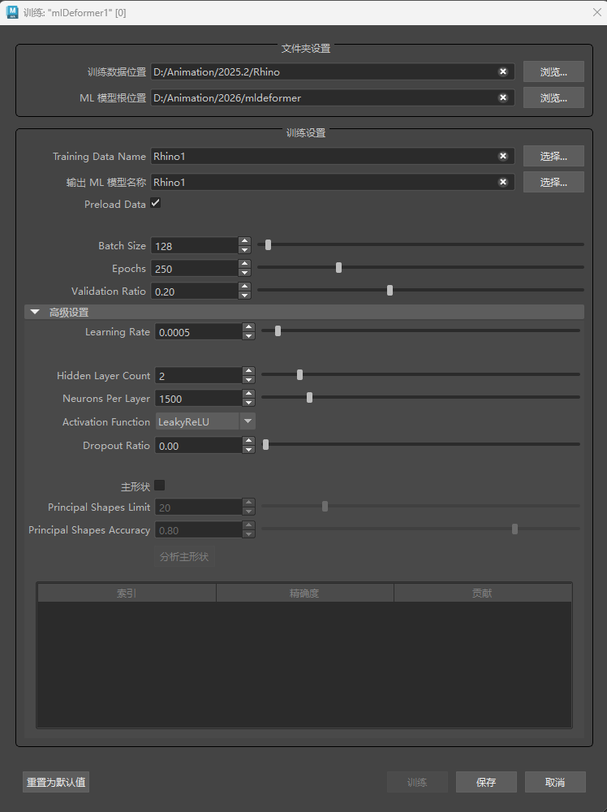

在 ML 变形器训练设置中，您可以配置如何对机器学习模型进行训练数据训练。有关如何导出训练数据的详细信息，请参见 ML 变形器“导出训练数据”(Export Training Data)窗口。
注： ML 变形器训练设置与 ML 变形器“导出训练数据”(Export Training Data)窗口不同。
若要了解如何使用 ML 变形器将复杂变形传递到源对象，请参见创建 ML 变形器和使用单独的目标几何体创建 ML 变形器。
打开 ML 变形器训练设置
- 在 ML 变形器属性(ML Deformer Attributes)选项卡中，单击“训练模型...”(Train Model...)
 图标。
图标。
- 在 ML 变形器属性(ML Deformer Attributes)选项卡中，在“ML 模型”(ML Model)列上单击鼠标右键，然后选择“训练模型...”(Train Model...)。

文件夹设置(Folder Settings)
通过此部分，您可以设置导出的训练数据和训练模型的路径。
- 训练数据位置(Training Data Location)
-
显示将对模型进行训练的导出训练数据的路径。有关如何导出训练数据的详细信息，请参见 ML 变形器“导出训练数据”(Export Training Data)窗口。单击“浏览”(Browse)导航到可以加载训练数据的文件夹。注： 这可以是一个临时目录，因为在对模型进行训练后，无需训练数据，除非您想使用相同的数据对其重新训练。
- ML 模型根位置(ML Model Root Location)
- 显示保存训练的 ML 模型的目录，默认情况下，该目录位于项目文件夹内。ML 变形器需要 ML 模型才能运行，因此这些模型通常应与场景保留在同一项目中，以便更轻松地共享。
- 单击“浏览”(Browse)导航到要存储 ML 模型的文件夹。
训练设置(Training Settings)
本部分让您定义用于示教 ML 变形器的训练数据。
- 训练数据名称(Training Data Name)
- 指定用于训练模型的训练数据集的名称。这应与在 ML 变形器“导出训练数据”(Export Training Data)窗口中导出训练数据时指定的名称匹配。
- 输出 ML 模型名称(Output ML Model Name)
- 将创建的文件夹的名称，用于保存经过训练的 ML 模型文件及其关联元数据。此文件夹的后缀名为“.mldf”。例如，使用名称“test”进行导出时，将在“训练数据名称”(Training Data Name)目录的“ML 模型根位置”(ML Model Root Location)文件夹中创建一个名为 test.mldf 的文件夹。
- 预加载数据(Preload Data)
- 激活“预加载数据”(Preload Data)，以在训练过程中将所有训练数据加载到内存中，而不是批量加载。如果训练数据集能够完全放入内存中，则建议启用“预加载数据”(Preload Data)，因为这样会使训练过程明显加快。如果在 GPU 上进行训练，速度差可能会更明显。
- 批大小(Batch Size)
- 指定将数据集分为的“批”的大小。这些批一起加载到内存中，因此您需要足够的 RAM（如果使用 GPU，则还需要 VRAM）来支持指定的批大小。
- 训练次数(Epochs)
- 用于设置训练处理完整数据集的次数。“训练次数”(Epochs)的数量会影响训练模型所花费的时间。
- 如果对结果不满意，请在增加训练次数前尝试使用较小的训练次数 (< 100)。使用更多训练次数进行训练可让模型从数据中了解更多信息，但要注意“过度拟合”。
- 当模型过于擅长匹配给定的特定数据且无法概括为新的控制值时，将发生过度拟合。请参见 ML 变形器“训练结果”(Training Results)窗口，以分析训练数据中的过度拟合增量。

过度拟合示例：蓝色线表示训练，橙色表示验证
- 要检查是否过度拟合，请比较训练和验证损失：如果验证错误大于训练错误，则这可能表示模型与训练数据过度拟合。（请参见上面的示例）。
- 验证比率(Validation Ratio)
- 指定应留待验证的训练数据样例的百分比。验证集是训练数据的随机采样，不会用于训练。它提供了一个有用的指标，说明模型在其未见过的数据上的表现如何，也可用于检查是否存在过度拟合。
高级设置(Advanced Settings)
高级 ML 变形器训练设置提供了更多控制近似的方法。建议使用默认设置，仅在您有特定需求时才调整“高级设置”(Advanced Settings)。
- 学习率(Learning Rate)
- 配置模型每批必须执行的学习“步骤”的大小，以根据该批的结果进行自身调整。值越小，所需的训练次数越多，可能会过载，而值越大，混乱程度越大，可能无法生成良好的近似。
- 隐藏层计数(Hidden Layer Count)
- 神经网络中的层数，不包括输入层和输出层。当前，所有设置均统一应用于每个隐藏层。
- 指定更多层有助于模型近似处理控件与生成的变形几何体之间的复杂关系，但会降低模型的运行和/或训练速度，这可能会造成不一致。
- 每层的神经元数(Neurons per layer)
- 应存在于模型每层中的人造神经元数。
- 这些神经元从上一层获取一组输入值，并生成输出值。增加神经元数使模型能够学习更多的变形。但是，增加神经元数也会增加模型的大小，使其运行和/或训练速度变慢（尤其是对于高分辨率网格），并导致过度拟合。
- 通常，深度神经网络比广度神经网络更高效。
- 激活函数(Activation Function)
-
选择要应用于神经元输入总和以生成输出的函数。这些函数为输出引入了非线性，使模型能够学习输入和输出之间的非线性关系。
- Sigmoid
- S 形曲线函数。
- 有关说明，请参见 PyTorch 文档中的 Sigmoid。
- TanH
- 双曲正切函数。
- 有关说明，请参见 PyTorch 文档中的 TanH。
- Leaky ReLU
- 与 ReLU 类似，只是它们的坡度较小，而不是所有的负值都是 0，例如：f(x)= 0.01 * x。
- 这样可以防止因为粘滞在负值上而导致的神经元消亡。
- 有关说明，请参见 PyTorch 文档中的 LeakyReLU。
- ReLU（改良线性单位）
- 简单的分段函数，如果 x 为正值，则 f(x) = x，如果 x 为负值，则 f(x) = 0。
- 由于其简单性，此函数比其他函数更快地返回良好结果。但是，由于负值之间没有坡度，因此有时输入会停滞在负值中且不可训练。
- 有关说明，请参见 PyTorch 文档中的 ReLU。
- 线性(Linear)
- 线性是最基本的激活函数：f(x) = x。仅由线性激活组成的网络无法学习非线性变形，因此最好仅在需要或与其他激活函数配合使用时使用。
- 有关说明，请参见 PyTorch 文档中的 Linear。
- 修剪比率(Dropout Ratio)
- 使用“修剪比率”(Dropout Ratio)可帮助防止过度拟合。使用“修剪比率”(Dropout Ratio)时，在训练期间，每个层的比率设置的输入部分将设置为零。将输入设置为零会使模型学习冗余连接，从而使其更强大。
- 但是，此方法可能会产生不需要的结果，例如，在控件不应影响输出时将控件链接到输出。例如，移动腕关节导致肩部变形。
- 主形状(Principal Shapes)
-
激活“主形状”(Principal Shapes)，以便 ML 变形器计算目标变形的一系列基础姿势，而不是解算每个姿势的基础顶点和目标顶点之间的差。有关如何使用“主形状”(Principal Shapes)的步骤，请参见使用主形状创建 ML 变形器训练数据。
主形状类似于混合形状：为了创建最终结果，它们具有混合在一起的关联权重。将主形状添加到基础时，它们会重新创建目标变形。这样，ML 变形器使用主形状将控制值映射到这些权重，而不是进行近似增量的训练。
使用主形状非常有用，因为要学习的权重数小于增量数，这样就能更快地学习和解算 ML 模型。（您可能需要减少每层的神经元数，以避免过度拟合。）
主形状是根据训练姿势使用奇异值分解计算出来的。注： 确保您有足够的 RAM 来保存训练数据集，因为所有训练姿势都加载到内存中以执行此计算。 - 主形状限制(Principal Shapes Limit)
- 要生成的最大主形状数。此值充当硬限制，因此即使未达到所需精度，计算最多也只能使用这么多形状。如果训练数据中的采样数超过增量数，则会显示错误消息。
- 主形状精确度(Principal Shapes Accuracy)
- 主形状组合在采样姿势中应达到的精确度级别。然后，ML 变形器将生成重新创建目标变形以满足此精确度级别所需的主形状数。
注： 这是使用完美权重值的精确度，因此训练模型得出的结果将不太精确。
- 重置为默认值(Reset to Defaults)
- 恢复 ML 变形器训练设置默认选项。
- 训练(Train)
- 开始 ML 变形器的训练过程。
- 保存(Save)
- 将设置保存在 ML 变形器训练设置中，以便可以再次使用它们。若要重用先前的 ML 变形器训练设置，请单击“训练数据名称”(Training Data Name)和“输出 ML 模型名称”(Output ML Model Name)字段中的“选择”(Choose)。
- 取消(Cancel)
- 关闭 ML 变形器训练设置。